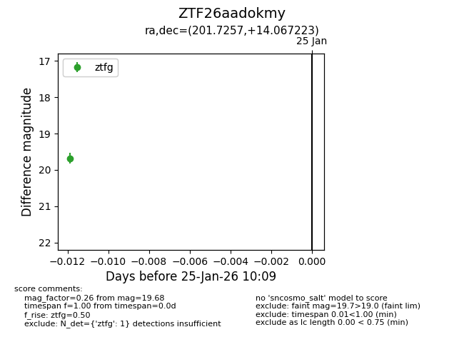
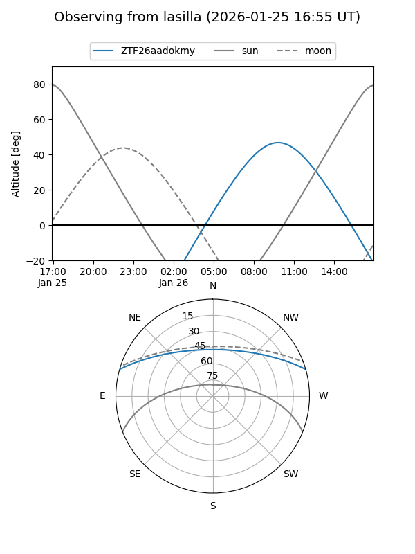
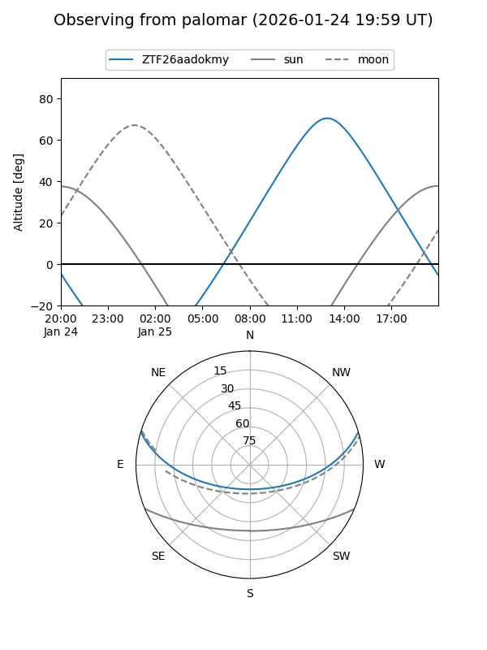

ZTF26aadokmy
Target ZTF26aadokmy at 2026-01-25 10:11
Aliases and brokers:
FINK: link
Lasair: link
ALeRCE: link
alt names
ZTF26aadokmy (ztf,fink_ztf)
Coordinates:
equatorial (ra, dec) = 201.7257,+14.06722
equatorial (HMS+DMS) = 13:26:54.18,+14:04:02.00
galactic (l, b) = (337.0460,+74.53944)
Flags:
Photometry:
last ztfg=19.68
1 ztfg detections
Lightcurve

Visibility


Additional plots